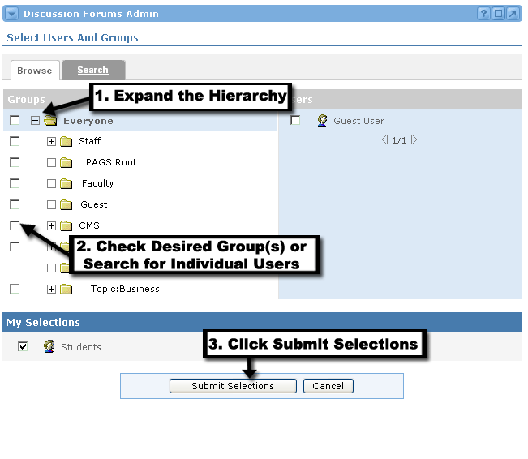

Adding Users to the Forum
You will now see the Select Users And Groups screen. To add users and groups to this forum, follow these steps:
- Use the Browse tab to select group(s) from the group hierarchy, click the + icon next to a group name to expand the group list.
- Place a checkmark next to each group for which the discussion forum will be enabled.
- To search for specific users, click the Search tab.
- Enter search criteria and click Search.
- Place a checkmark next to each user for whom the discussion forum will be enabled.
- Once all desired users and/or groups have been selected, click the Submit Selections button at the bottom of the channel.
